Tools: Sketch, Illustrator, Proto.io
Teammate: Tianlei Zheng, Yihong Chen
The motivation behind this project is to protect ancient dialects in China. While more and more people speak Mandarin, a lot of the dialects are disappearing local cultures.
Fuzhou is a online dictionary designed for the dialect in Fuzhou, China.
I lived in a city called "Fuzhou" and we have a beautiful dialect since 1400 years ago. While less and less people know how to speak it, two of my engineer friends in high school developed a website as an online dictionary for our dialect. I joined the team in October 2018 to help them redesign the user interface and experience.
Sole Designer
As the only designer on the team, I first work on improvements to the existing experience. I work remotely with my teammates in China and keep close contact with them through Skype calls.
Working with engineers
Working with engineers on real projects give me a different perspective to looking at the design. I learn to not only consider visual elements but also thinking from the technical perspective.
1. Fuzhou Dialect has been used since 1400 years ago.
Fuzhou dialect generally formed in the Tang Dynasty in the 7th century. Centered in Fuzhou, it covers eleven cities and counties. Research shows that about 15 million people currently use the dialect.
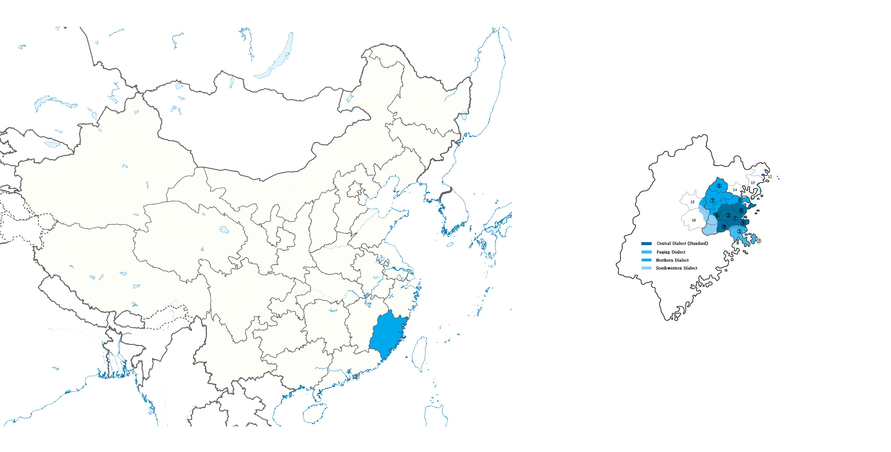
2. During hundreds of years, Fuzhou Dialect cultivates local culture.
Based on the language, we have developed local drama, songs, and literature.
3. But because of the growing popularity of mandarin, many people stop using local dialects, especially among young people.
Since the 1911 Revolution, Mandarin was largely promoted in Fuzhou, and the government discouraged citizens from using Fuzhou dialect in public places, especially in school.
"We rarely hear of any Fuzhou Dialect, except at the communities or markets where there are a lot of senior residents."
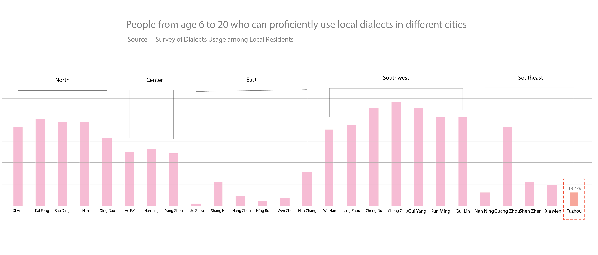
4. An important reason few people know Fuzhou Dialect is that it is a difficult language to learn.
Both its pronunciation and writing are very different from Mandarin. Furthermore, the pronunciation of the same character even varies in different situations.
"Fuzhou dialect is quite different from the pronunciation of Mandarin and can not even be understood by those who live in cities nearby."
5. Although there are some resources, they do not provide a systematic way for learning.
I studied the existing products on the Internet. I realized that most of them specialized in only one single aspect of the language, such as pronunciation, translation or proverbs, while none of them provides a systematic way for learning.

Forum
Because we only three students on the team, the new designs need to reuse the existing elements as much as possible to eliminate unnecessary development efforts.
Color Scheme
Redesign landing page
Make user easily find the information they need.
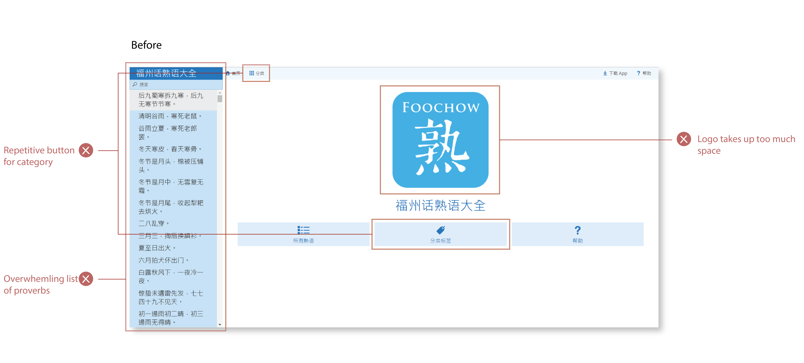
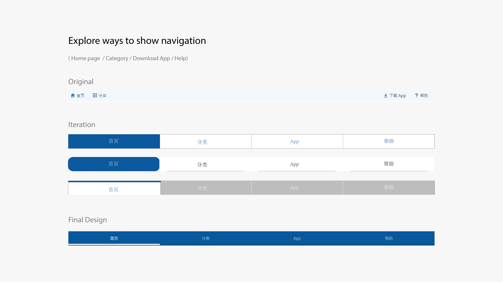
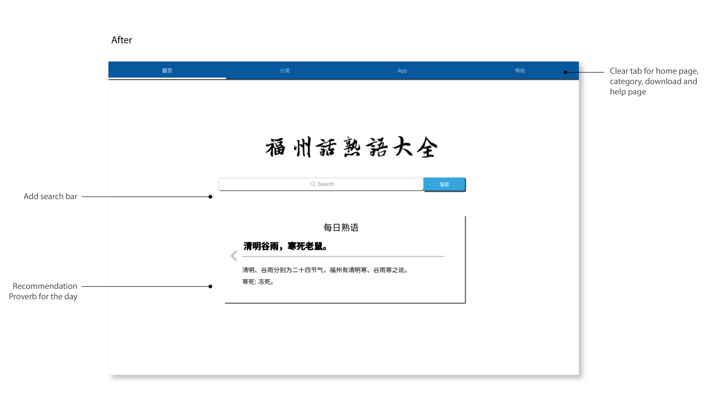
Redesign category page
Categorize the content into different groups.
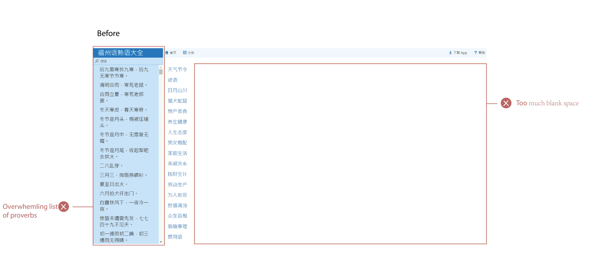
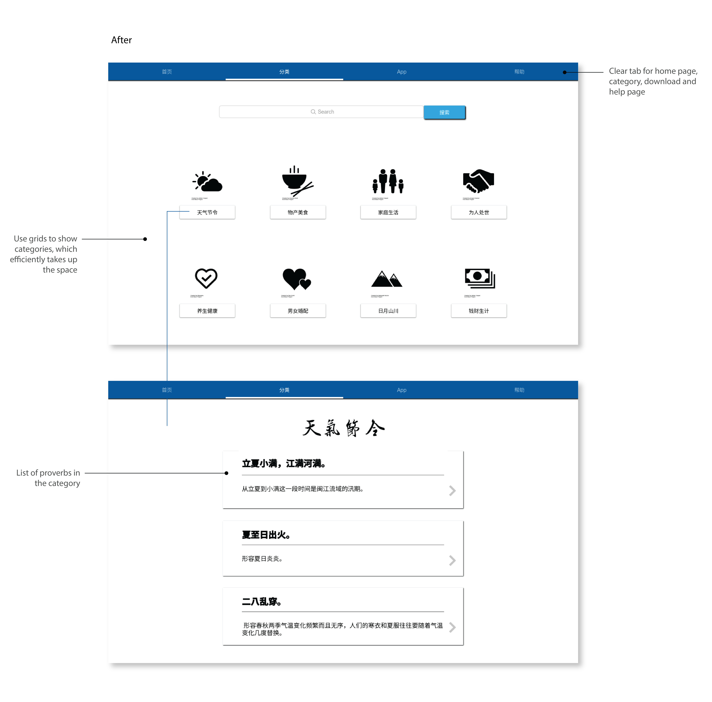
Redesign proverb page
Clear page for each proverb with explanation, proununciation and example.
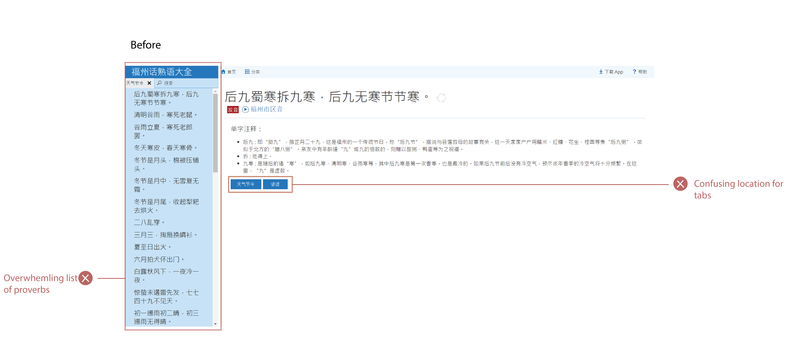
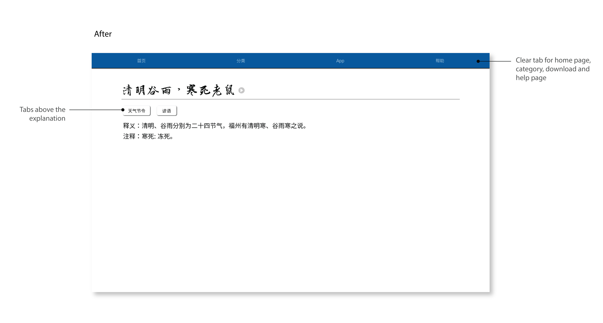
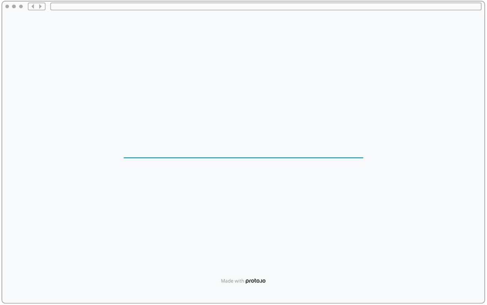
Develop on multiple platforms.
I customize the interface for tablets and phones so that people can use the app on mobile devices during daily use.
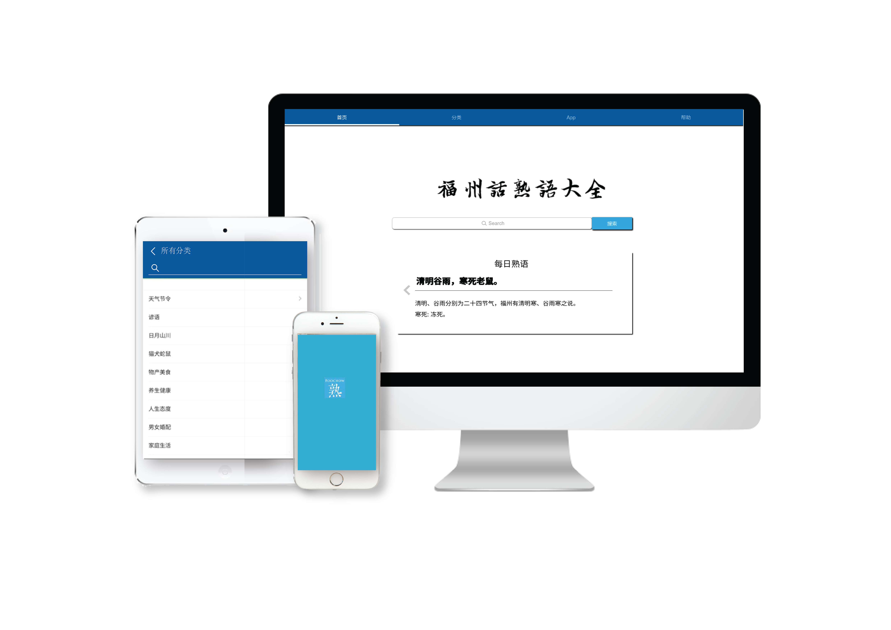
From quick iterations to precision
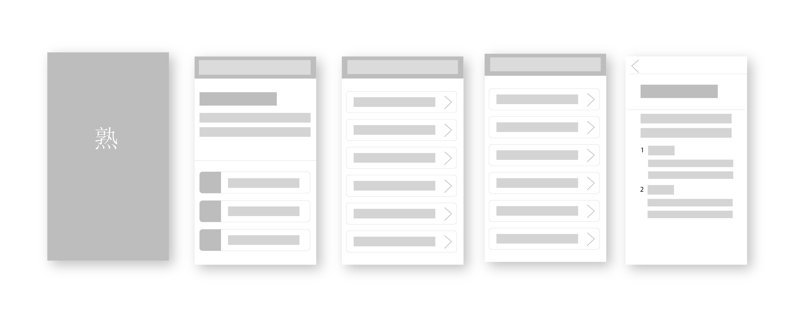
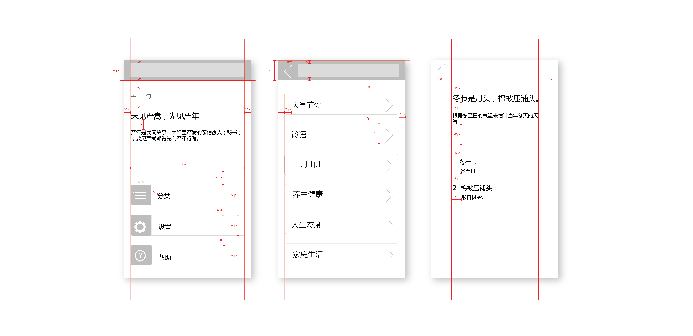
Final Design
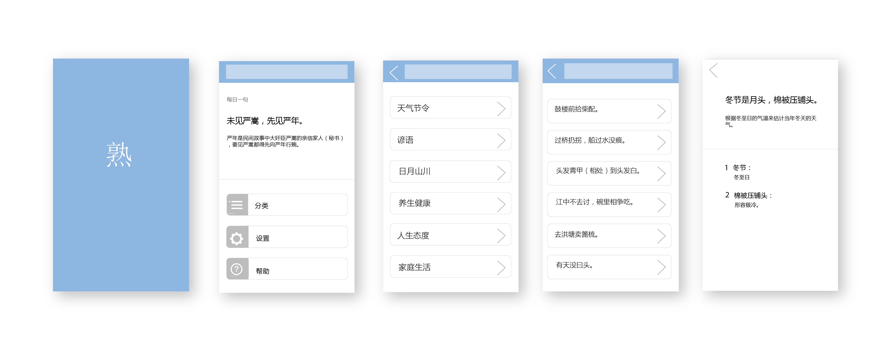
Since we target young people and Wechat is a popular social app in China. We started a wechat blog to post articles about Fuzhou Dialect. This is when more people joined our team as writers and editors. We currently have 2000 subscribers. I mostly worked on some improvements for the format and visual design.
The intersection of design and technology.
I learned that in order for a project to work out well, designers and engineers have to understand and work closely with each other. Design should consider the technical liminations and engineering should match with design as well.
Never be afraid to start
Everyone in the team are just college students. I was a little hesitated to start at the beginning as there is no one profenssional in our team. While I realize if you want to do something, instead of worring about limits, you should just take the actions to start.
We started from ideas and thoughts, and we are still on our way to protect the things we treassure in our hometown.
Learning Platform
Our next plan is to develop the dicitonary into a systematic learning platform by providing functions such as translation, pronunciation, proverbs and creating a community forum.
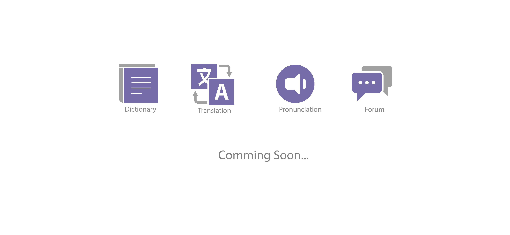
More works

Journey
A app designed for travellers to record and share their journey.
UX . Prototype . Visual System

Foodly
A app encouraging people to live healthier through eating nutritious food.
Research . Interaction . Prototype

Split
A visualized calculator for spliting bills.
Research . Design Thinking . Development

Uber
Redesign UI for multiple destinations.
UX . Design Thinking
Split
A visualized calculator for spliting bills.

Fuzhou
An online dictionary designed to preserve Chinese dialect.